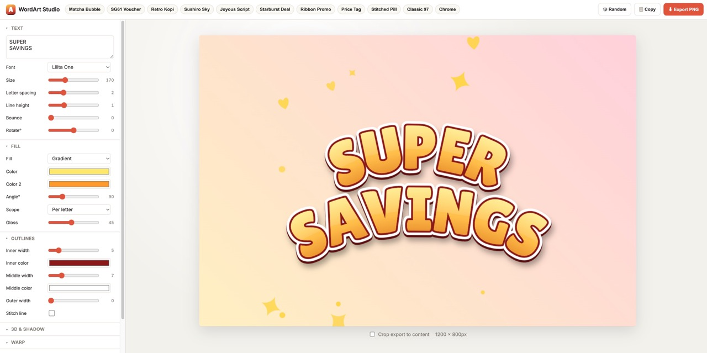
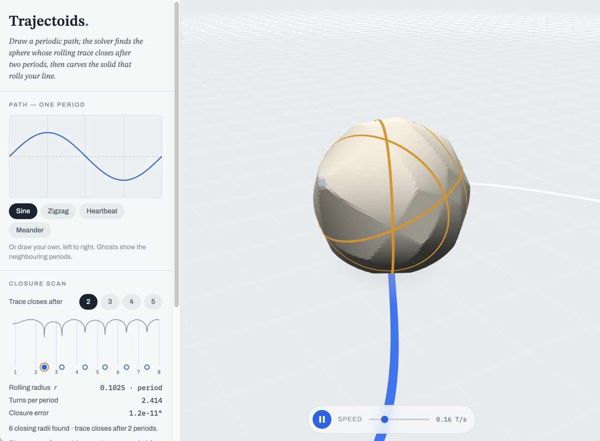

Hi, I'm Bob


It's my personal web app platform (PWAP). It provides all of the plumbing (testing, "agent stuff", authentication, security rules) for my various web app projects.
I currently work at canvas.xyz, investigating new web technology. Most of my time has been spent on Canvas, a framework for building decentralised web applications on top of merkle trees and libp2p. More recently, we've built a tool for analysing your Twitter archive with LLMs (and those of others, on Community Archive).
Thoughts
Things that I hope somebody will stumble upon in 20 years time.
2026
- Task packets—an actually useful AI coding pattern
- How I currently think about the future of programming, vis-à-vis AI
- Announcing Bobnet—a personal web app platform
- What is Canvas?—introduction to a very ambitious idea
- things on my mind lately—a list
- polytrack, backups and dependencies—some things i've been thinking about
2025
2024
2022
2021
2020
Toys
Small applications that I wrote or vibe-coded, that do something neat.
WordArt generator

The world is full of presets and defaults. Back in the 90s and 00s, WordArt from Microsoft Office was everywhere. Now we see GPT Image 1 everywhere. The 5-over-1 and the large-panel-system building are examples in architecture, where the end product is directly shaped by systems of mass production, safety regulations and economic necessity. I wanted to see if Claude could replicate the style of contemporary supermarket flyers and promotional sidewalk signs (1, 2, 3, 4) from Southeast Asia, which make up a kind of "visual noise" of globalised shopping malls and commercial streets. I don't think I can claim any credit for this - it feels more like scratching the bark of a bush and watching a bud sprout there.


Trajectoid generator

A trajectoid is a shape that traces a repeating path on a flat surface. It turns out that for a given repeating path, you can construct a shape that can be rolled along that path. This was proven in 2023! I think it's very cool that we are still discovering new shapes. I wanted to see what trajectoids would look like for different kinds of paths, such a straight lines, jagged lines, sinusoidal curves and chaotic wiggly scribbles. Try it out here!